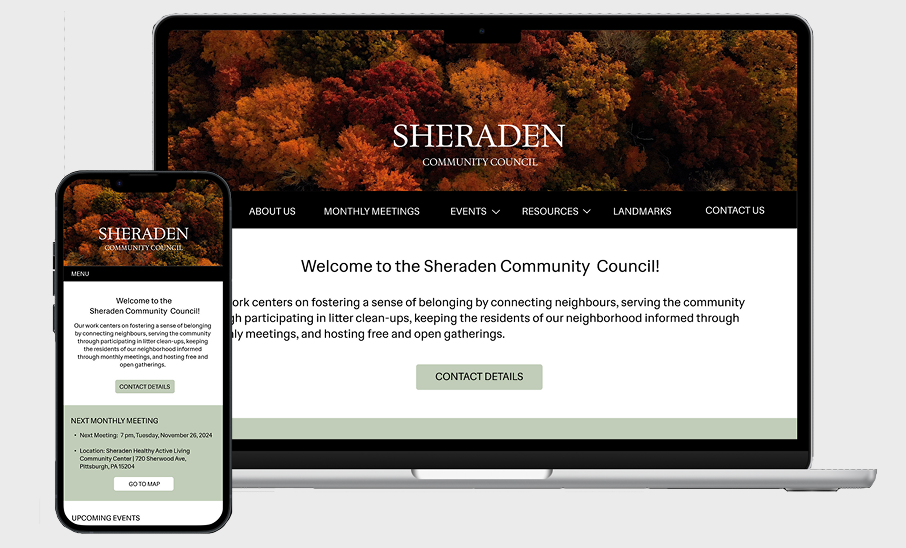
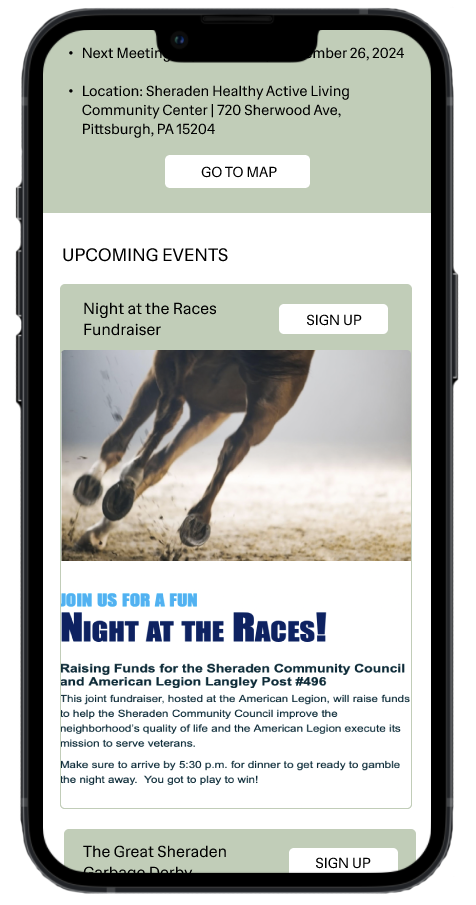
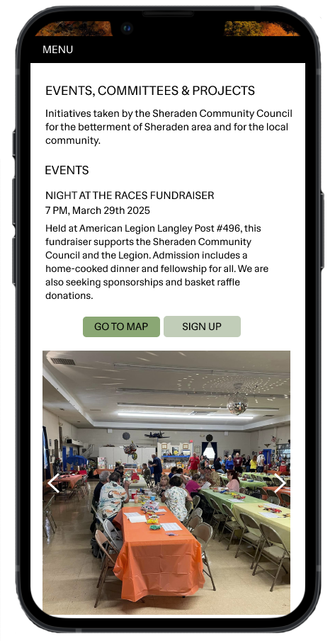
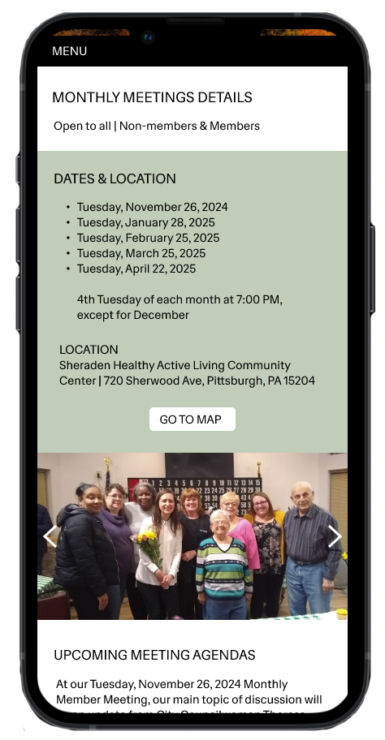
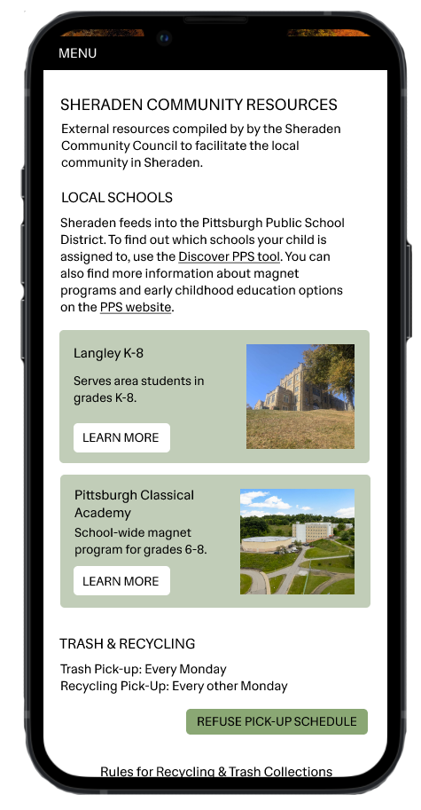
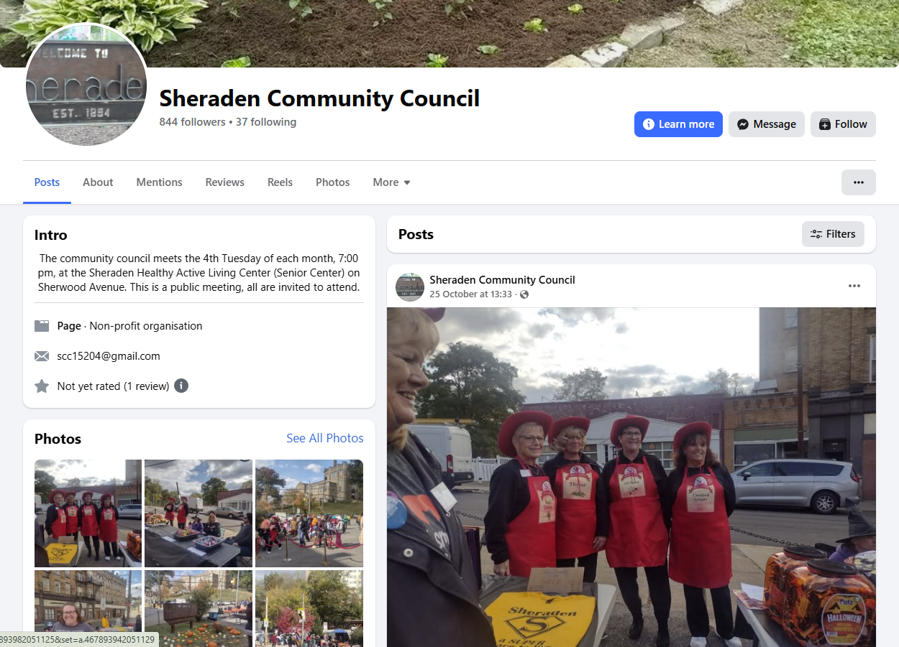
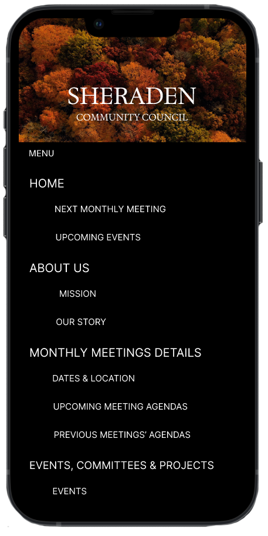
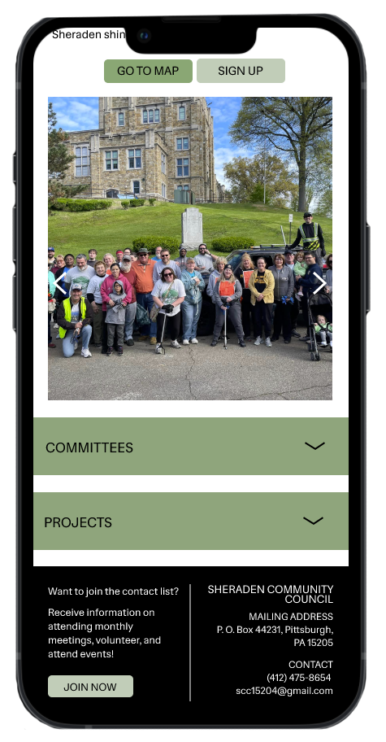

SHERADEN WEBSITE
Client: Sheraden Community Council, Pittsburgh, PA
Timeline
January - May 2025
Role
Web Designer & Developer
Programs
HTML, Bootstrap CSS, JavaScript
This client project involved desining a customised webpage with responsive layout, text and aesthetic. It was aimed to target a specific demographic group of older residents and retirees. The prototypes were built using Figma, tested processes and developed intuitive navigation using HTML, JavaScript and Bootstrap CSS for responsiveness.

01 Website Features
Mobile-first design prioritising effective information architecture.

Home Page

Events Page

Monthly Meetings Page

Community Resources Page
02 Background & Problem

Problem Context
The council lacked a platform for sharing events and important initiatives. They previously used a Facebook page to make postings relevant to the community.
Key Problems
The council struggles with...
1 Low volunteer numbers limit the impacts of events
2 Unclear what events are being posted
3 Postings are made after events have occurred
03 Client Goals
+56 Volunteers
Establish a committee of volunteers of up to 56 people in 1 year
x2 Council events sign-ups
Establish double the signs ups for council events
x3 Clean up events sign-ups
Establish triple the signs ups for cleanup events
Design Challenges & Solutions

DESIGN GOALS
A responsive website that...
1 Prioritises essential content and provides accessibility on all devices
2 Effectively advertise activities and informs users about volunteering opportunities
3 Accessibility, using large text sizes, high contrast colours and straightforward usability for less tech savvy users.
Design Challenge 1
Information overload...
There was a lot of information that the SCC wanted on their website, that throughout the user testing rounds posed as an issue. Many pages were prone to excessive scrolling and information overload. We worked closely with the client to synthesise text to essential content.
Design Challenge 2
Mobile Responsiveness...
We made sure to adjust the mobile responsiveness to ensure utmost user experience for mobile users. A notable pain point for non-tech savvy users is that they did not recognise the navbar hamburger menu icon.
Design Solution 1
We solved this through...
Through user testing we synthesised information that the users expressed to be the most important. We worked closely with the client to effectively integrate the information architecture, emphasising on monthly meetings and details about the committee, follow by information on the Sheraden Community.
Design Solution 2
We solved this through...
We solved this by changing the hamburger icon into the text ‘menu.’ We also leveraged using words for action items to ensure users that are less familiar with technology icons can confidently navigate the website.

